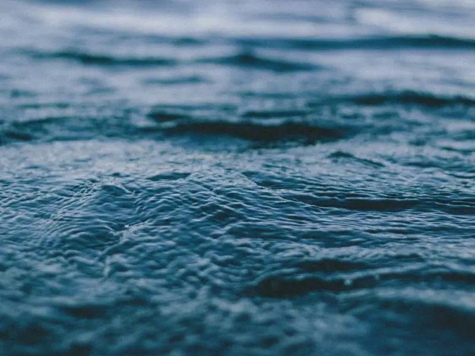

Стивен Мегара, последний из братьев, решил нанести ответный удар. «Я выманю его из тени!» — кричал он. Его план был безумен: снять охрану с яхты, оставить судно в туманной бухте и ждать убийцу. Ночь на берегу Лонг-Айленда тянулась мучительно долго. Эллери Куин сидел на причале, глядя на тусклые огни «Хелен». Тишина была абсолютной, лишь волны лениво бились о сваи. Он знал, что Мегара совершает ошибку, доверяя своей интуиции больше, чем логике фактов.